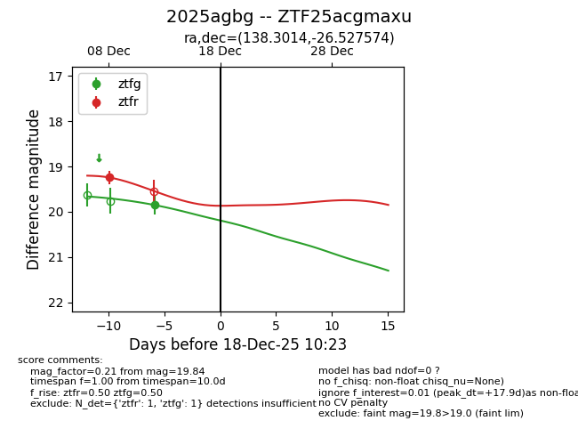
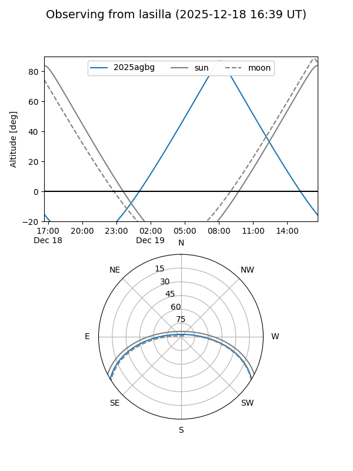
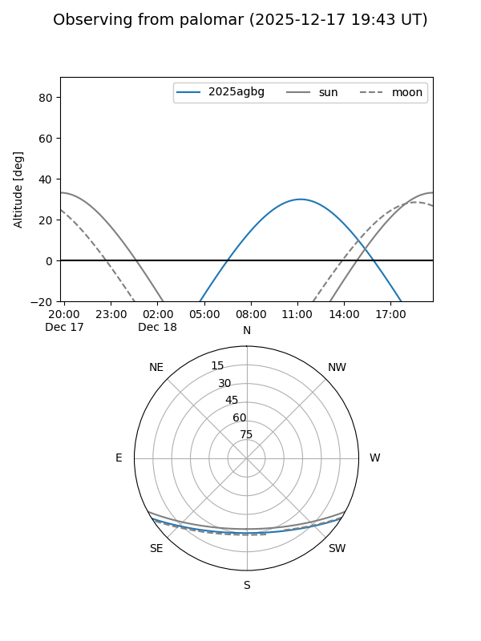

2025agbg
Target 2025agbg at 2025-12-18 11:18
Aliases and brokers:
FINK: fink-portal.org/ZTF25acgmaxu
Lasair: lasair-ztf.lsst.ac.uk/objects/ZTF25acgmaxu
ALeRCE: alerce.online/object/ZTF25acgmaxu
TNS: wis-tns.org/object/2025agbg
YSE: ziggy.ucolick.org/yse/transient_detail/2025agbg
alt names
ZTF25acgmaxu (ztf,fink_ztf)
2025agbg (tns,yse)
Coordinates:
equatorial (ra, dec) = 138.3014,-26.52757
equatorial (HMS+DMS) = 09:13:12.34,-26:31:39.27
galactic (l, b) = (253.9508,+14.95708)
Photometry
last ztfg=19.84, ztfr=19.24
1 ztfg, 1 ztfr detections
Lightcurve

Visibility


Additional plots